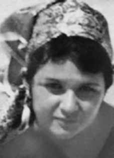

Lourdes
Maria
Wanderley
Pontes
CIRCUNSTÂNCIAS DA MORTE
Lourdes Maria Wanderley Pontes foi morta no dia 29 de dezembro de 1972, em ação comandada pelo Destacamento de Operações de Informações – Centro de Operações de Defesa Interna (DOI-CODI) do I Exército, no Rio de Janeiro. De acordo com a versão oficial, Lourdes e outros cinco militantes do PCBR teriam morrido em confronto armado com agentes das forças de segurança no dia 29 de dezembro de 1972. A nota, divulgada pelo serviço de Relações Públicas do I Exército somente na edição do Jornal do Brasil de 17 de janeiro de 1973, com o título “Destruído o Grupo de Fogo Terrorista do PCBR/GB”, informava que em ações simultâneas, realizadas em pontos diferentes da Guanabara, os órgãos de segurança, prosseguindo operações contra grupos terroristas remanescentes, desbarataram duas importantes células do Partido Comunista Brasileiro Revolucionário (PCBR), que atuavam coordenadas nos bairros de Grajaú e Bento Ribeiro. As operações contra o grupo teriam se viabilizado graças a informações obtidas a partir da prisão de lideranças regionais do PCBR e da consequente apreensão de documentos relativos ao planejamento de ações futuras. Particularmente, a prisão de Fernando Augusto da Fonseca, importante quadro do PCBR, em Recife, no dia 26 de dezembro de 1972, teria possibilitado o desmonte do chamado “Grupo de Fogo do PCBR”, do qual Lourdes fazia parte. Segundo a versão oficial, em seu interrogatório, Fernando Augusto teria fornecido às equipes de investigação informações sobre dois aparelhos do PCBR, localizados no Rio de Janeiro. De posse dessas informações, os agentes do DOI-CODI do IV Exército, em Recife, teriam conduzido Fernando até o Rio de Janeiro, onde ele teria acompanhado um grupo de agentes a um encontro marcado com outros quatro militantes, no bairro do Grajaú. No mesmo momento, outra equipe teria se deslocado para o bairro de Bento Ribeiro, local onde se situaria um aparelho do PCBR. No Grajaú, ao se aproximar do carro no qual estavam outros quatro militantes do PCBR, Fernando teria sido baleado por seus próprios companheiros que, percebendo o cerco policial, decidiram abrir fogo. Na sequência, um intenso tiroteio com as forças de segurança teria resultado na morte de José Bartolomeu Rodrigues, Getúlio de Oliveira Cabral e José Silton Pinheiro, cujos corpos teriam sido carbonizados dentro do veículo, incendiado em decorrência da troca de tiros. Um quarto militante teria conseguido escapar, mas nunca chegou a ser identificado. No segundo confronto, travado no “aparelho” localizado em Bento Ribeiro, dois militantes teriam reagido ao cerco policial com suas armas, inclusive granadas de mão, e acabaram mortos no tiroteio. De acordo com a nota oficial, as duas vítimas seriam Valdir Salles Saboia e Luciana Ribeiro da Silva, nome falso de Lourdes Maria Wanderley Pontes. As investigações realizadas pela CEMDP e pela Comissão Nacional da Verdade (CNV) revelaram a existência de indícios que permitem desconstruir a versão divulgada pelos órgãos da repressão. Documentos oficiais demonstram que, além de Fernando Augusto da Fonseca, cuja prisão foi oficialmente reconhecida, ao menos Valdir Salles Saboia também tinha sido detido pelos órgãos de segurança antes de morrer. Um Relatório do Centro de Informações da Aeronáutica (Cisa) sobre as atividades do PCBR lista, entre outras ações, um assalto a banco que teria ocorrido em outubro de 1972, na rua Marquês de Abrantes, no Rio de Janeiro. Segundo o relatório, as informações sobre essa ação tinham sido levantadas a partir de declarações de Fernando Augusto da Fonseca e Valdir Salles Saboia. Esse registro aponta para um contato de agentes da repressão com Valdir, anterior à morte do militante, o que indica que também fora detido e interrogado no final de 1972, contrariando a versão de tiroteio após o “estouro” de um aparelho. A prisão de Valdir Saboia é confirmada por outro documento do Cisa, de 19 de março de 1973, que apresenta um extrato das declarações do militante, relacionando as ações do PCBR supostamente mapeadas a partir de seu interrogatório. Há, ainda, indícios de que Lourdes Maria também tenha sido presa anteriormente. Em depoimento prestado em 1997, Teresa Cristina Wanderley Corrêa de Araújo afirmou que, em dezembro de 1972, tomou conhecimento, através de um amigo, da prisão de sua “prima-irmã” Lourdes Maria no Rio de Janeiro, sendo informada que seu estado físico era precário e que seria transferida para interrogatório em Recife. O caráter fantasioso do episódio narrado como suposto tiroteio que teria vitimado Valdir e Lourdes Maria fica evidente pela indicação do endereço da casa onde teriam sido mortos em Bento Ribeiro: trata-se da rua Sargento Valder Xavier de Lima, nome de um militar morto por militantes do PCBR, em 1970, em Salvador (BA), sendo que Paulo Pontes, marido de Lourdes, foi condenado à prisão perpétua pela morte do sargento. Além disso, como já observado pela CEMDP, as fotos da perícia técnica desmentem a versão de tiroteio no dito aparelho em Bento Ribeiro, que supostamente teria envolvido inclusive o uso de granadas de mão pelos militantes. A análise das fotos demonstra que não há marcas de tiros na parede, e o corpo de Lourdes Maria aparece em um canto da sala, atrás de uma árvore de natal, que permanece com as bolas de vidrilho intactas. O auto de exame cadavérico e a certidão de óbito foram registrados, na época, com o nome falso de “Luciana Ribeiro da Silva”, embora os órgãos de segurança tivessem conhecimento da verdadeira identidade de Lourdes, que consta na nota oficial divulgada pela imprensa. Somente em 1986 a família obteve judicialmente a emissão de atestado de óbito em nome de Lourdes Maria Wanderley Pontes. O médico Roberto Blanco dos Santos, conhecido por assinar laudos fraudulentos, foi responsável pelo exame de necropsia dos seis militantes mortos. O laudo necroscópico registra que Lourdes foi atingida por três disparos sequenciais na região peitoral esquerda, o que configura quadro característico de execução. Os médicos legistas também descreveram que o corpo de Lourdes apresentava rigidez muscular generalizada, o que indica que ela já estava morta há pelo menos 12 horas. A mesma observação consta no laudo de necropsia de Valdir Salles Saboia, sendo possível estimar que os dois tenham morrido por volta das 14 horas do dia 29 de dezembro de 1972, uma vez que a necropsia foi realizada às 2h30 do dia 30. O verdadeiro horário de morte de Lourdes e Valdir contradiz a versão divulgada na nota oficial, que informava que o confronto teria ocorrido na noite do dia 29. Outro aspecto que fragiliza a versão oficial de tiroteio é obtido pela análise das fotos produzidas pelo serviço fotográfico do Instituto de Criminalística, que apresentam o cadáver de Valdir ferido sob uma cama, sem nenhuma concentração de sangue na área que circunda o corpo. Com relação à operação no Grajaú, a provável prisão anterior dos militantes e a encenação do tiroteio com a carbonização do veículo para encobrir as execuções sumárias ou as mortes sob tortura, o ex-preso político Rubens Manoel Lemos afirmou, em declaração prestada em 31 de janeiro de 1996, que Fernando Augusto da Fonseca (“Sandália”), José Silton Pinheiro e Getúlio de Oliveira Cabral “foram colocados, já mortos, dentro de um carro da marca Volkswagen, que foi incendiado (explodido) no Rio de Janeiro”. Essa declaração é endossada por outros testemunhos que chegaram ao conhecimento do então deputado federal Nilmário Miranda, enquanto membro da Comissão Externa para Mortos e Desaparecidos Políticos, que denunciaram a morte dos militantes no DOI-CODI do I Exército, no Rio de Janeiro. Soma-se a isso a análise dos registros fotográficos do local das mortes pela equipe pericial da CNV, que concluiu que o carro foi carbonizado de dentro para fora, uma vez que o motor e o tanque de combustíveis estavam intactos. Segundo a avaliação dos peritos, tanto a distribuição da queima como a intensidade das chamas nos locais atingidos indicam que o fogo foi colocado no interior do veículo, tendo se propagado de dentro para fora. Além disso, é possível observar, pelas fotos, que o fusca não apresentava perfurações de disparos em sua carroçaria. Outro indício de falsidade da versão oficial diz respeito ao encaminhamento dos corpos para o necrotério do Rio de Janeiro. De acordo com a versão divulgada pelos órgãos de segurança, os dois confrontos teriam ocorrido em horários distintos e em diferentes pontos da cidade: duas vítimas teriam morrido em Bento Ribeiro e as outras quatro no Grajaú, bairros que ficam a aproximadamente 15 quilômetros de distância um do outro. Seria esperado, portanto, que os corpos chegassem ao necrotério em momentos distintos. Não obstante, os documentos oficiais atestam que, ao contrário, todos os corpos deram entrada no Instituto Médico-Legal (IML) às 2h30 da madrugada do dia 30 de dezembro, em guias sequenciais, o que indica que foram recolhidos juntos. Embora não seja possível apontar as reais circunstâncias de morte dos seis integrantes do PCBR, fica demonstrada a falsidade da versão oficial divulgada à época com o intuito de encobrir a morte das vítimas por execução ou por decorrência de tortura. Segundo a certidão de óbito, o corpo de Lourdes Maria foi enterrado no Cemitério Ricardo de Albuquerque como indigente. Seus restos mortais foram transferidos para um ossário-geral em 1978 e enterrados em uma vala clandestina entre 1980 e 1981, junto com 2.100 ossadas de indigentes sepultadas no mesmo cemitério. Os restos mortais de Lourdes Maria Wanderley Pontes não foram localizados e identificados até hoje.
Lourdes Maria Wanderley Pontes was killed on December 29, 1972, in an action commanded by the Information Operations Detachment – Internal Defense Operations Center (DOI-CODI) of the 1st Army, in Rio de Janeiro. According to the official version, Lourdes and five other PCBR militants died in an armed confrontation with agents of the security forces on December 29, 1972. The note, published by the Public Relations service of the I Army only in the Jornal do Brasil edition of January 17, 1973, with the title “The PCBR/GB Terrorist Fire Group Destroyed”, informed that in simultaneous actions, carried out in different points of Guanabara, the police bodies security, continuing operations against remaining terrorist groups, disbanded two important cells of the Brazilian Revolutionary Communist Party (PCBR), which operated in coordination in the neighborhoods of Grajaú and Bento Ribeiro. The operations against the group would have been made possible thanks to information obtained from the arrest of regional PCBR leaders and the consequent seizure of documents relating to the planning of future actions. In particular, the arrest of Fernando Augusto da Fonseca, an important member of the PCBR, in Recife, on December 26, 1972, would have made it possible to dismantle the so-called “PCBR Fire Group”, of which Lourdes was part. According to the official version, during his interrogation, Fernando Augusto would have provided the investigation teams with information about two PCBR devices, located in Rio de Janeiro. Armed with this information, DOI-CODI agents from the IV Army, in Recife, would have taken Fernando to Rio de Janeiro, where he would have accompanied a group of agents to a scheduled meeting with four other militants, in the Grajaú neighborhood. At the same time, another team would have moved to the neighborhood of Bento Ribeiro, where a PCBR device would be located. In Grajaú, when approaching the car in which four other PCBR militants were, Fernando was allegedly shot by his own companions who, noticing the police siege, decided to open fire. Subsequently, an intense shootout with security forces resulted in the death of José Bartolomeu Rodrigues, Getúlio de Oliveira Cabral and José Silton Pinheiro, whose bodies were charred inside the vehicle, which was set on fire as a result of the exchange of gunfire. A fourth militant reportedly managed to escape, but was never identified. In the second confrontation, which took place in the “apparatus” located in Bento Ribeiro, two militants allegedly reacted to the police siege with their weapons, including hand grenades, and ended up dead in the shootout. According to the official note, the two victims were Valdir Salles Saboia and Luciana Ribeiro da Silva, false name Lourdes Maria Wanderley Pontes. The investigations carried out by CEMDP and the National Truth Commission (CNV) revealed the existence of evidence that allows the version disseminated by the repression bodies to be deconstructed. Official documents show that, in addition to Fernando Augusto da Fonseca, whose arrest was officially recognized, at least Valdir Salles Saboia had also been detained by security agencies before he died. A Report from the Air Force Information Center (Cisa) on the activities of the PCBR lists, among other actions, a bank robbery that allegedly occurred in October 1972, on Rua Marquês de Abrantes, in Rio de Janeiro. According to the report, information about this action had been gathered from statements by Fernando Augusto da Fonseca and Valdir Salles Saboia. This record points to contact between repression agents and Valdir, prior to the militant's death, which indicates that he was also detained and interrogated at the end of 1972, contradicting the version of a shootout following the “explosion” of a device. Valdir Saboia's arrest is confirmed by another Cisa document, dated March 19, 1973, which presents an extract from the militant's statements, listing the PCBR's actions supposedly mapped out based on his interrogation. There is also evidence that Lourdes Maria has also been arrested previously. In a statement given in 1997, Teresa Cristina Wanderley Corrêa de Araújo stated that, in December 1972, she learned, through a friend, of the arrest of her “cousin sister” Lourdes Maria in Rio de Janeiro, being informed that her physical condition was precarious and that she would be transferred for interrogation in Recife. The fantasy nature of the episode narrated as an alleged shooting that killed Valdir and Lourdes Maria is evident from the indication of the address of the house where they were killed in Bento Ribeiro: it is Rua Sargento Valder Xavier de Lima, named after a soldier killed by PCBR militants in 1970, in Salvador (BA), and Paulo Pontes, Lourdes' husband, was sentenced to life in prison for the sergeant's death. Furthermore, as already noted by CEMDP, the photos from the technical expertise deny the version of shooting at the said device in Bento Ribeiro, which allegedly even involved the use of hand grenades by the militants. Analysis of the photos shows that there are no gunshot marks on the wall, and Lourdes Maria's body appears in a corner of the room, behind a Christmas tree, which remains with the glass balls intact. The cadaveric examination report and the death certificate were registered, at the time, under the false name of “Luciana Ribeiro da Silva”, although the security agencies were aware of Lourdes' true identity, which appears in the official note released by the press. Only in 1986 did the family obtain a death certificate issued in the name of Lourdes Maria Wanderley Pontes. Doctor Roberto Blanco dos Santos, known for signing fraudulent reports, was responsible for the autopsy examination of the six dead militants. The autopsy report records that Lourdes was hit by three sequential shots in the left pectoral region, which represents a characteristic execution. The coroners also described that Lourdes' body had generalized muscle stiffness, which indicates that she had been dead for at least 12 hours. The same observation appears in the autopsy report of Valdir Salles Saboia, making it possible to estimate that the two died around 2 pm on December 29, 1972, since the autopsy was carried out at 2:30 am on the 30th. The true time of death of Lourdes and Valdir contradicts the version published in the official note, which stated that the confrontation had occurred on the night of the 29th. Another aspect that weakens the official version of shooting is obtained by analyzing the photos produced by the photographic service of the Institute of Criminalistics, which show Valdir's corpse injured under a bed, with no concentration of blood in the area surrounding the body. Regarding the operation in Grajaú, the probable previous arrest of the militants and the staging of the shooting with the charring of the vehicle to cover up the summary executions or deaths under torture, former political prisoner Rubens Manoel Lemos stated, in a statement made on January 31, 1996, that Fernando Augusto da Fonseca (“Sandália”), José Silton Pinheiro and Getúlio de Oliveira Cabral “were placed, already dead, inside of a Volkswagen car, which was set on fire (exploded) in Rio de Janeiro”. This statement is endorsed by other testimonies that came to the attention of the then federal deputy Nilmário Miranda, as a member of the External Commission for Political Dead and Missing, who denounced the death of the militants in the DOI-CODI of the 1st Army, in Rio de Janeiro. Added to this was the analysis of photographic records from the scene of the deaths by the CNV expert team, which concluded that the car was charred from the inside out, as the engine and fuel tank were intact. According to the experts' assessment, both the distribution of the burning and the intensity of the flames in the affected areas indicate that the fire was placed inside the vehicle, having spread from the inside to the outside. Furthermore, it is possible to observe, from the photos, that the Beetle did not have gunshot holes in its body. Another sign of falsehood in the official version concerns the sending of the bodies to the Rio de Janeiro morgue. According to the version released by security agencies, the two clashes would have occurred at different times and in different parts of the city: two victims would have died in Bento Ribeiro and the other four in Grajaú, neighborhoods that are approximately 15 kilometers away from each other. It would therefore be expected that the bodies would arrive at the morgue at different times. However, the official documents attest that, on the contrary, all the bodies were admitted to the Instituto Médico-Legal (IML) at 2:30 am on December 30th, in sequential order, which indicates that they were collected together. Although it is not possible to point out the real circumstances of the deaths of the six PCBR members, the official version released at the time with the intention of covering up the deaths of the victims by execution or as a result of torture is demonstrated to be false. According to the death certificate, Lourdes Maria's body was buried in the Ricardo de Albuquerque Cemetery as a pauper. His remains were transferred to a general ossuary in 1978 and buried in a clandestine grave between 1980 and 1981, along with 2,100 bones of indigents buried in the same cemetery. The remains of Lourdes Maria Wanderley Pontes have not been located and identified to this day.
Lourdes María Wanderley Pontes fue asesinada el 29 de diciembre de 1972, en una acción comandada por el Destacamento de Operaciones de Información – Centro de Operaciones de Defensa Interna (DOI-CODI) del 1.º Ejército, en Río de Janeiro. Según la versión oficial, Lourdes y otros cinco militantes del PCBR murieron en un enfrentamiento armado con agentes de las fuerzas de seguridad el 29 de diciembre de 1972. La nota, publicada por el servicio de Relaciones Públicas del I Ejército sólo en la edición del Jornal do Brasil del 17 de enero de 1973, con el título “El Grupo de Fuego Terrorista PCBR/GB Destruido”, informaba que en acciones simultáneas, realizadas en diferentes puntos de Guanabara, los cuerpos policiales de seguridad, continuaban las operaciones contra los restantes terroristas. grupos, desmantelaron dos importantes células del Partido Comunista Revolucionario Brasileño (PCBR), que operaban coordinadamente en los barrios de Grajaú y Bento Ribeiro. Las operaciones contra el grupo habrían sido posibles gracias a la información obtenida a partir de la detención de líderes regionales del PCBR y la consiguiente incautación de documentos relacionados con la planificación de futuras acciones. En particular, la detención de Fernando Augusto da Fonseca, importante miembro del PCBR, en Recife, el 26 de diciembre de 1972, habría permitido desmantelar el llamado “Grupo de Fuego PCBR”, del que Lourdes formaba parte. Según la versión oficial, durante su interrogatorio, Fernando Augusto habría proporcionado a los equipos de investigación información sobre dos dispositivos PCBR, ubicados en Río de Janeiro. Armados con esa información, agentes del DOI-CODI del IV Ejército, en Recife, habrían llevado a Fernando a Río de Janeiro, donde habría acompañado a un grupo de agentes a una reunión prevista con otros cuatro militantes, en el barrio de Grajaú. Al mismo tiempo, otro equipo se habría desplazado hasta el barrio de Bento Ribeiro, donde estaría ubicado un dispositivo PCBR. En Grajaú, al acercarse al auto en el que viajaban otros cuatro militantes del PCBR, Fernando habría sido baleado por sus propios compañeros quienes, al notar el cerco policial, decidieron abrir fuego. Posteriormente, un intenso tiroteo con las fuerzas de seguridad resultó en la muerte de José Bartolomeu Rodrigues, Getúlio de Oliveira Cabral y José Silton Pinheiro, cuyos cuerpos quedaron calcinados en el interior del vehículo, que fue incendiado como consecuencia del intercambio de disparos. Según los informes, un cuarto militante logró escapar, pero nunca fue identificado. En el segundo enfrentamiento, que tuvo lugar en el “aparato” ubicado en Bento Ribeiro, dos militantes supuestamente reaccionaron al asedio policial con sus armas, incluidas granadas de mano, y terminaron muertos en el tiroteo. Según la nota oficial, las dos víctimas eran Valdir Salles Saboia y Luciana Ribeiro da Silva, nombre falso de Lourdes María Wanderley Pontes. Las investigaciones realizadas por el CEMDP y la Comisión Nacional de la Verdad (CNV) revelaron la existencia de evidencias que permiten deconstruir la versión difundida por los órganos de represión. Documentos oficiales muestran que, además de Fernando Augusto da Fonseca, cuya detención fue reconocida oficialmente, al menos Valdir Salles Saboia también había sido detenido por organismos de seguridad antes de morir. Un informe del Centro de Información de la Fuerza Aérea (Cisa) sobre las actividades del PCBR enumera, entre otras acciones, un robo a un banco ocurrido presuntamente en octubre de 1972, en la Rua Marquês de Abrantes, en Río de Janeiro. Según el informe, la información sobre esta acción se habría obtenido de declaraciones de Fernando Augusto da Fonseca y Valdir Salles Saboia. Este registro apunta a contactos entre agentes de represión y Valdir, previos a la muerte del militante, lo que indica que éste también fue detenido e interrogado a finales de 1972, contradiciendo la versión de un tiroteo tras la “explosión” de un artefacto. La detención de Valdir Saboia está confirmada por otro documento de la Cisa, fechado el 19 de marzo de 1973, que presenta un extracto de las declaraciones del militante, enumerando las acciones del PCBR supuestamente trazadas a partir de su interrogatorio. También hay pruebas de que Lourdes María también ha sido detenida anteriormente. En declaración dada en 1997, Teresa Cristina Wanderley Corrêa de Araújo afirmó que, en diciembre de 1972, se enteró, a través de un amigo, de la detención de su “prima hermana” Lourdes Maria en Río de Janeiro, siendo informada que su condición física era precaria y que sería trasladada para ser interrogada en Recife. El carácter fantasioso del episodio narrado como un presunto tiroteo que mató a Valdir y Lourdes María se evidencia por la indicación de la dirección de la casa donde fueron asesinados en Bento Ribeiro: se trata de la calle Sargento Valder Xavier de Lima, que lleva el nombre de un soldado asesinado por militantes del PCBR en 1970, en Salvador (BA), y Paulo Pontes, marido de Lourdes, fue condenado a cadena perpetua por la muerte del sargento. Además, como ya señaló el CEMDP, las fotografías del peritaje técnico desmienten la versión del tiroteo contra dicho dispositivo en Bento Ribeiro, que supuestamente incluso implicó el uso de granadas de mano por parte de los militantes. El análisis de las fotografías muestra que no hay marcas de disparos en la pared, y el cuerpo de Lourdes María aparece en un rincón de la habitación, detrás de un árbol de Navidad, que permanece con las bolas de cristal intactas. El informe del examen cadavérico y el certificado de defunción fueron registrados, en su momento, con el nombre falso de “Luciana Ribeiro da Silva”, aunque los organismos de seguridad conocían la verdadera identidad de Lourdes, que aparece en la nota oficial difundida por la prensa. Recién en 1986 la familia obtuvo un certificado de defunción expedido a nombre de Lourdes María Wanderley Pontes. El médico Roberto Blanco dos Santos, conocido por firmar informes fraudulentos, fue el responsable de la autopsia de los seis militantes muertos. El informe de la autopsia registra que Lourdes recibió tres disparos secuenciales en la región pectoral izquierda, lo que representa una ejecución característica. Los forenses también describieron que el cuerpo de Lourdes presentaba rigidez muscular generalizada, lo que indica que llevaba muerta al menos 12 horas. La misma observación aparece en el informe de la autopsia de Valdir Salles Saboia, lo que permite estimar que los dos murieron alrededor de las 14.00 horas del 29 de diciembre de 1972, ya que la autopsia se realizó a las 02.30 horas del día 30. La verdadera hora de la muerte de Lourdes y Valdir contradice la versión publicada en la nota oficial, que afirmaba que el enfrentamiento se había producido la noche del día 29. Otro aspecto que debilita la versión oficial del tiroteo se obtiene al analizar las fotografías elaboradas por el servicio fotográfico del Instituto de Criminalística, que muestran el cadáver de Valdir herido debajo de una cama, sin concentración de sangre en la zona que rodea el cuerpo. Respecto de la operación en Grajaú, la probable detención previa de los militantes y la realización del tiroteo con carbonización del vehículo para encubrir las ejecuciones sumarias o muertes bajo tortura, el ex preso político Rubens Manoel Lemos afirmó, en declaración del 31 de enero de 1996, que Fernando Augusto da Fonseca (“Sandália”), José Silton Pinheiro y Getúlio de Oliveira Cabral “fueron colocados, ya muertos, dentro de un automóvil Volkswagen, que fue incendiado (explotado) en Río de Janeiro”. Esta afirmación está respaldada por otros testimonios que llegaron a conocimiento del entonces diputado federal Nilmário Miranda, como miembro de la Comisión Externa de Muertos y Desaparecidos Políticos, quien denunció la muerte de los militantes del DOI-CODI del 1.º Ejército, en Río de Janeiro. A esto se sumó el análisis de registros fotográficos del lugar de las muertes realizado por el equipo de peritos de la CNV, que concluyó que el auto estaba carbonizado de adentro hacia afuera, ya que el motor y el tanque de combustible estaban intactos. Según la valoración de los peritos, tanto la distribución de las llamas como la intensidad de las llamas en las zonas afectadas indican que el fuego se localizó en el interior del vehículo, habiéndose extendido desde el interior hacia el exterior. Además, se puede observar, en las fotografías, que el Escarabajo no tenía agujeros de bala en su carrocería. Otro signo de falsedad en la versión oficial se refiere al envío de los cadáveres a la morgue de Río de Janeiro. Según la versión difundida por los organismos de seguridad, los dos enfrentamientos habrían ocurrido en distintos momentos y en distintos puntos de la ciudad: dos víctimas habrían muerto en Bento Ribeiro y las otras cuatro en Grajaú, barrios que se encuentran aproximadamente a 15 kilómetros de distancia entre sí. Por lo tanto, se esperaría que los cuerpos llegaran a la morgue en diferentes momentos. Sin embargo, los documentos oficiales dan fe de que, por el contrario, todos los cadáveres fueron ingresados al Instituto Médico-Legal (IML) a las 2:30 horas del 30 de diciembre, en orden secuencial, lo que indica que fueron recogidos juntos. Aunque no es posible señalar las circunstancias reales de la muerte de los seis miembros de la PCBR, la versión oficial difundida en su momento con la intención de encubrir las muertes de las víctimas mediante ejecución o como resultado de torturas resulta falsa. Según el certificado de defunción, el cuerpo de Lourdes María fue enterrado en el Cementerio Ricardo de Albuquerque en calidad de indigente. Sus restos fueron trasladados a un osario general en 1978 y enterrados en una fosa clandestina entre 1980 y 1981, junto con 2.100 huesos de indigentes enterrados en el mismo cementerio. Los restos de Lourdes María Wanderley Pontes no han sido localizados ni identificados hasta el día de hoy.